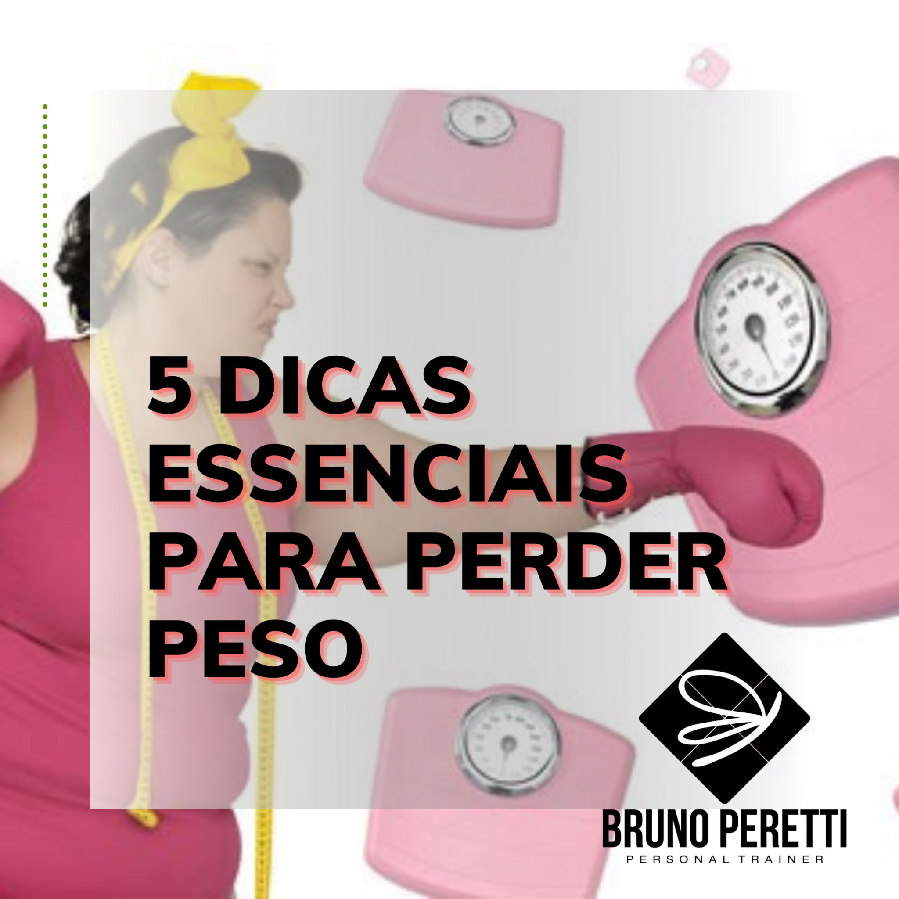
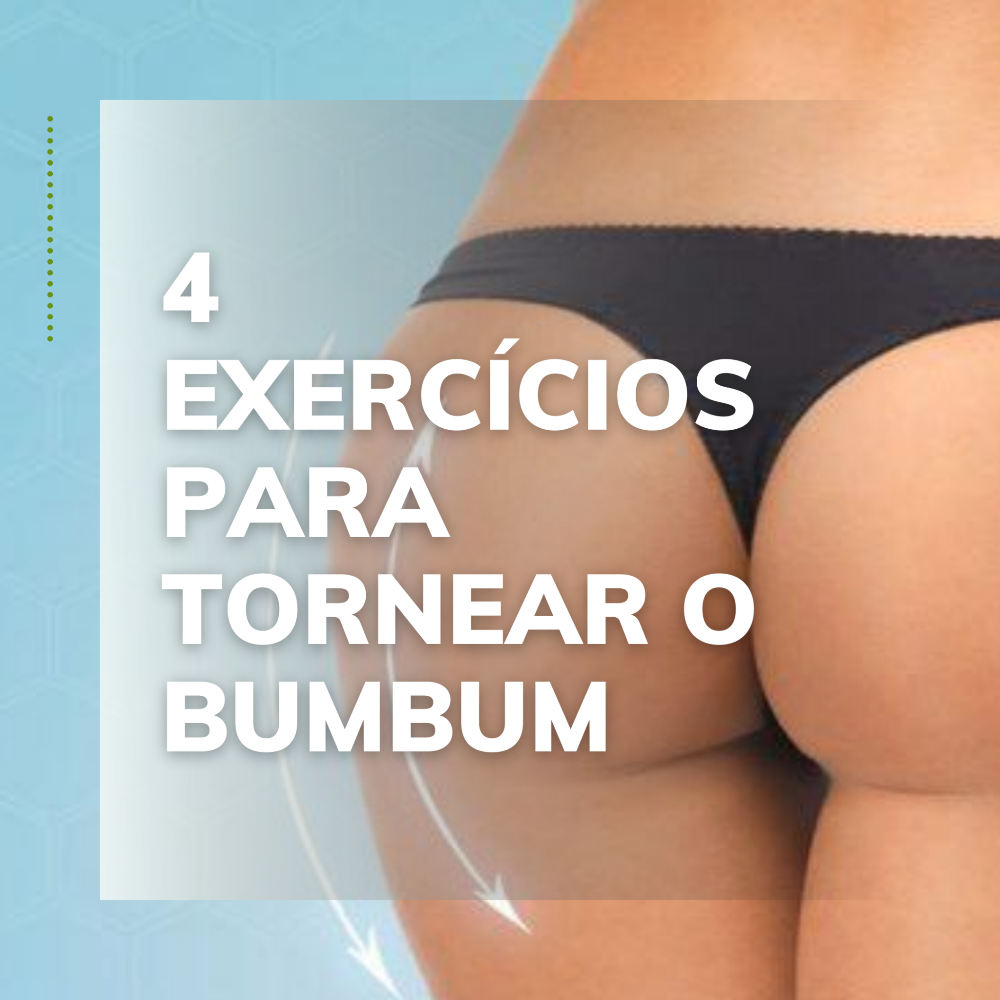
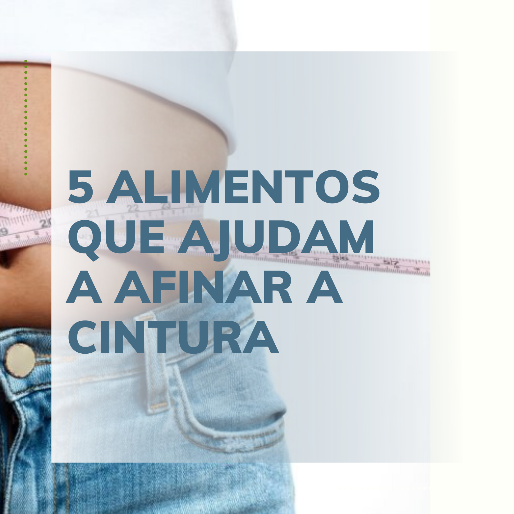
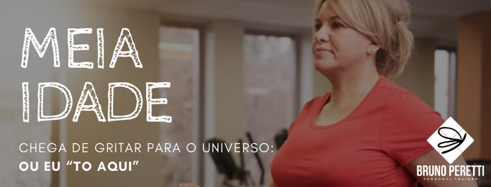

 Emagrecimento: 5 Dicas essenciais para perder peso 17/09/2020 Por Bruno Peretti Hoje eu vou falar sobre emagrecimento e te dar 5 dicas essenciais para perder peso e emagrecer, e essa dicas foram inspiradas nos maus hábitos da sociedade moderna, muitas pessoas estão desesperadas atrás de receitas, métodos e fórmulas mágicas para emagrecer. Uma coisa eu te garanto, se você perguntar para 10 profissionais diferentes do ramo …
 4 Exercícios para tornear o bumbum 02/09/2020 Por Bruno Peretti Hoje eu vou abordar 4 exercícios para tornear o bumbum, e não há como negar o fato de que cada uma das mulheres querem um bumbum empinado e durinho. Mas para alcançar esse resultado é necessário exercitar o grupo muscular e controlar a gordura corporal, somente assim aumentar e moldar seus músculos da extremidade (rsrsrs) …
 Quer Afinar a Cintura – 5 Alimentos que ajudam! 28/07/2020 Por Bruno Peretti Hoje vamos abordar 5 alimentos que ajudam a afinar a cintura, curte a leitura e comenta lá embaixo o que acha. Quando comemos alimentos de baixo valor biológico e com muita caloria, o corpo tende a acumular cada vez mais gordura no abdômen, a famosa cintura. Que é o pesadelo de muitas pessoas na sociedade …
Como emagrecer depois dos 30 anos 14/07/2020 Por Bruno Peretti Sim é possível e quero que saiba como emagrecer depois dos 30 anos, afinal você já deve ter ouvido falar que com o passar dos anos é mais difícil emagrecer, e se você já chegou na casa dos 30 anos, percebeu que algumas coisas em seu corpo mudaram. A resistência física não é mais a …
 Exercício na meia idade – chega de gritar ao universo eu “to aqui” 08/07/2020 Por Bruno Peretti Exercícios na Meia-idade – chega de gritar ao universo OU EU TO AQUI Para você que já chegou ou se aproxima da meia idade, manter ou criar rotinas de exercícios físicos, pode fazer diferença no seu envelhecer; quando o envelhecer é sedentário, as pessoas quase gritam para o universo assim: OU EU “TO AQUI”, não …
Crise da meia idade: saiba como lidar 21/07/2020 Por Bruno Peretti Elliott Jaques é um médico canadense e ele formulou o termo crise da meia idade, nessa formulação o médico descreveu as dificuldades emocionais às pessoas costumam enfrentar entre os 35 e 55 anos. Ele relata que nessa fase da vida algumas pessoas podem sofrer com insegurança, ansiedade e baixa autoestima; o que pode gerar uma …